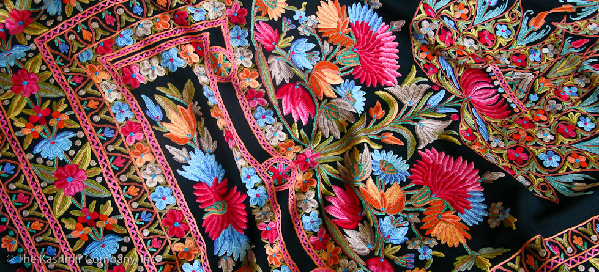
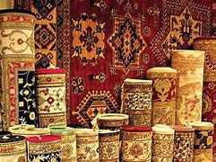
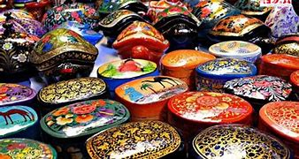
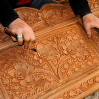
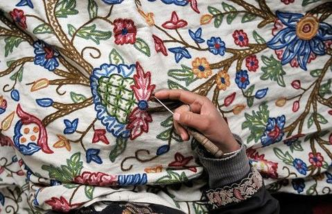
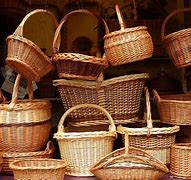

Jammu and Kashmir boasts a rich tradition of art and crafts, reflecting its unique cultural heritage and the influences of various communities.
Shawls:
Pashmina shawls are not just garments; they represent the artistry, culture, and heritage of Kashmir.
Their luxurious quality and intricate craftsmanship make them highly sought after worldwide, symbolizing warmth, elegance, and tradition.
Kashmiri Carpets:
Kashmiri carpets are a testament to the region's rich artistic heritage and craftsmanship. Their intricate designs, vibrant colors, and luxurious materials make them a prized possession for homes around the world.
Owning a Kashmiri carpet is not just about having a beautiful piece of art; it’s also about appreciating the culture and tradition that goes into its creation.
Kashmiri Papier-Mâché:
Kashmiri papier-mâché is a beautiful and intricate art form that encapsulates the region's rich cultural heritage.
Each piece is unique, showcasing the creativity and skill of artisans. Whether used as decorative art or functional items,
Kashmiri papier-mâché reflects the artistry and tradition of Kashmir, making it a cherished craft both locally and internationally.



Wood Carving:
Pashmina shawls are not just garments; they represent the artistry, culture, and heritage of Kashmir.
Their luxurious quality and intricate craftsmanship make them highly sought after worldwide, symbolizing warmth, elegance, and tradition.
Kashmiri Embroidery:
Kashmiri embroidery is a beautiful and intricate art form that exemplifies the region's rich cultural heritage.
Its delicate designs and skilled craftsmanship make it a cherished aspect of Kashmiri textiles, embodying the artistry and traditions of the region.
Whether adorning clothing or home décor, Kashmiri embroidery adds a touch of elegance and warmth, making it highly valued both locally and globally
Basketry:
Kashmiri papier-mâché is a beautiful and intricate art form that encapsulates the region's rich cultural heritage.
Each piece is unique, showcasing the creativity and skill of artisans. Whether used as decorative art or functional items,
Kashmiri papier-mâché reflects the artistry and tradition of Kashmir, making it a cherished craft both locally and internationally.


